Read, reason and write in pixels.
Text, images, audio, touch, and even robot actions can, in principle, all be rendered onto a single canvas, suggesting an ambitious goal of unifying all modalities within vision. Language provides the natural first test. To subsume it, a visual model must reason directly over text in pixels. Across a wide range of image, video, and unified multimodal generators, however, we find that their visual generation modules cannot perform symbolic reasoning over text on the canvas. They succeed only when an underlying text module or prompt rewriter already supplies the answer, effectively reducing the generator to a mere renderer, a limitation that post-training does little to resolve. To test whether this failure stems from pixels themselves or from current training paradigms, we train a family of purely pixel-space generative models from scratch without any text pathway. With images as their sole input and output, these models read questions, write intermediate steps, and produce answers directly on the canvas. Remarkably, they exhibit hallmark behaviors of large language models. Performance improves predictably with scale following a power law. Writing intermediate steps frame by frame substantially outperforms single-frame answering, echoing chain-of-thought, while reinforcement-learning post-training further strengthens reasoning. Moreover, sharing one canvas allows the same model to reason across modalities, a capability that text-only language models lack. To the best of our knowledge, this is the first systematic study of these phenomena in purely pixel-space generative models free of text tokens.
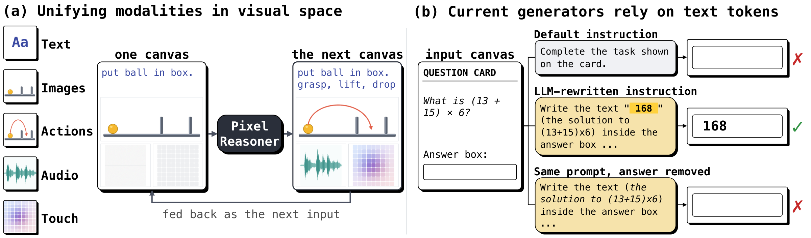
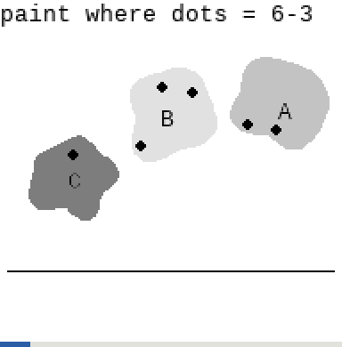
Image editing, video generation and unified multimodal models (UMM). They paint the answer only when text tokens hand it over.
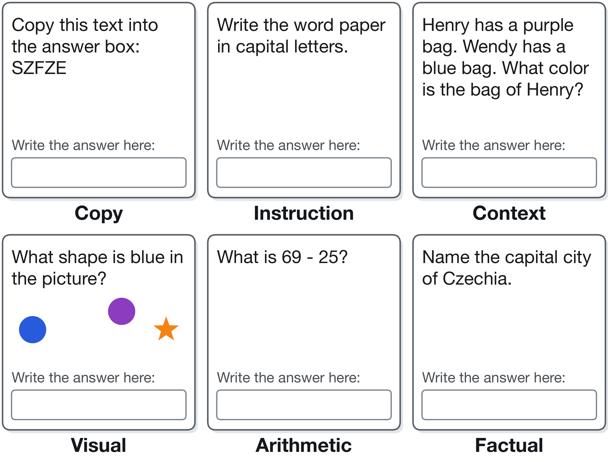
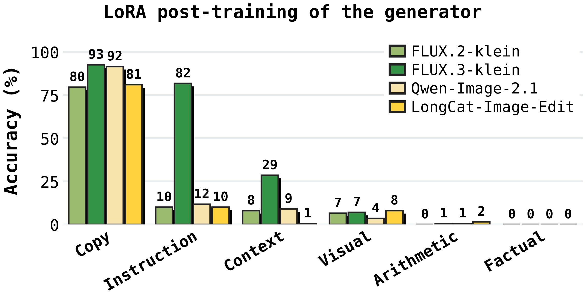
| Model | Default | Rewrite | Delete |
|---|---|---|---|
| Image editing | |||
| GPT-Image-2.5 | · | 98.0 | · |
| Gemini-3-Pro-Image | · | 94.1 | · |
| Nano-Banana-2.1 | · | 92.0 | · |
| Qwen-Image-2.0-Pro | 0.0 | 91.7 | · |
| Qwen-Image-2.1 | 0.0 | 86.0 | 0.0 |
| FLUX.3-klein | 0.0 | 83.4 | 0.0 |
| Wan2.6-Image | 0.0 | 81.7 | · |
| FLUX.2-klein | 0.0 | 55.5 | 0.0 |
| LongCat-Image-Edit | 0.0 | 20.4 | 0.0 |
| Video generation | |||
| MiniMax-H3 | 1.4 | 98.3 | 0.0 |
| Wan 3.0 | 0.0 | 83.3 | · |
| OmniWeaving | 0.0 | 24.0 | 0.0 |
| Cosmos3 | 0.0 | 13.6 | 0.0 |
| Wan2.2 | 0.0 | 0.7 | 0.0 |
| Unified multimodal | |||
| Default | Render | Think | |
| SenseNova | 18.7 | 99.7 | 96.0 |
| Emu3.5 | 0.0 | 27.0 | 0.5 |
| BAGEL | 0.0 | 13.3 | 0.7 |
| InternVL-U | 0.0 | 1.3 | 12.0 |
Trained from scratch, 7.6M to 458M parameters. They behave like LLMs.
Fit up to 130M, predict 458M.
Error falls as a power law of model size, just as in LLMs.
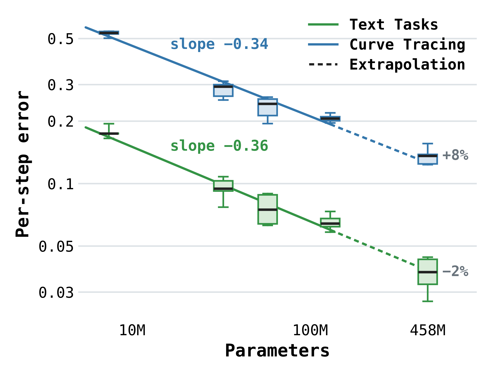
Same model, frame by frame vs direct.
Chain of thought beats direct answering, just as in LLMs.
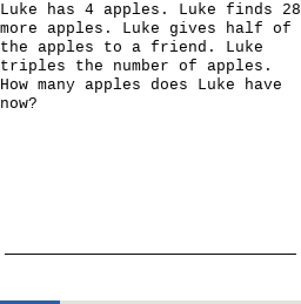
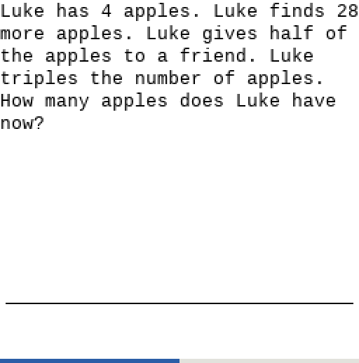
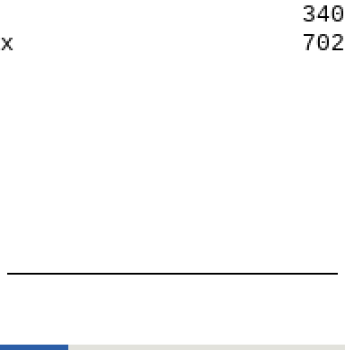
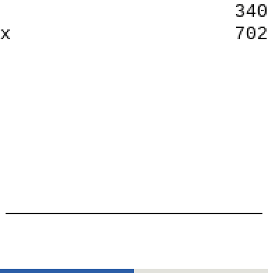
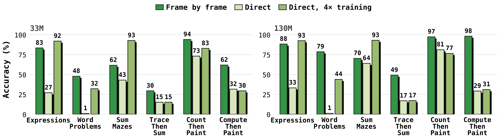
Same start model, equal compute. SFT on non-optimal demonstrations, SFT on optimal demonstrations, RL.
RL works.
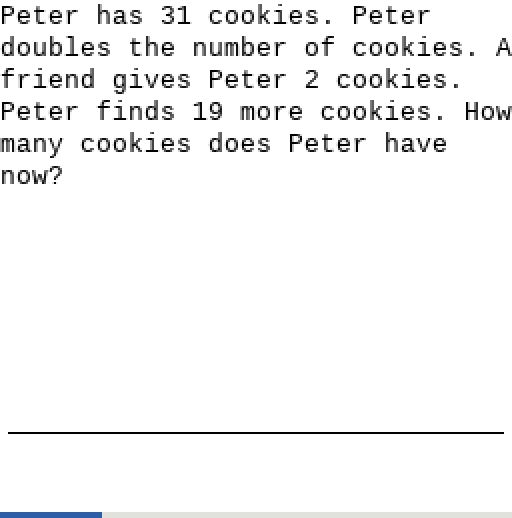
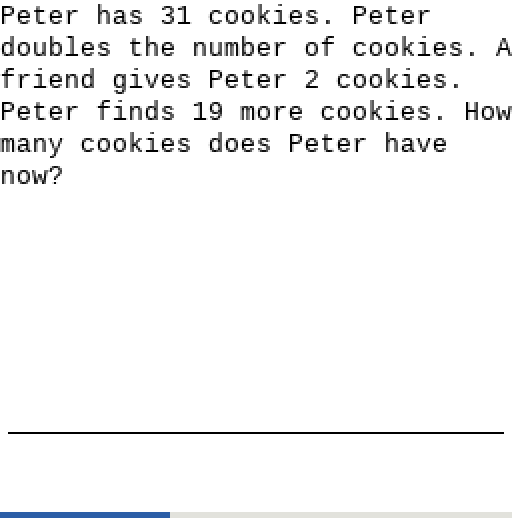
Before RL the model crams every equation into one frame and gets them wrong. After RL it writes one equation per frame.
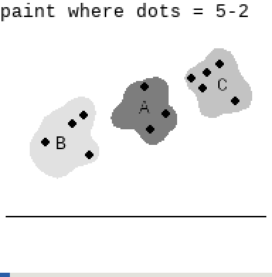
Before RL the model moves the box back and forth and paints the wrong region. After RL it boxes A once and paints it.
130M models on unseen test problems, same problem and same sampling noise for both.
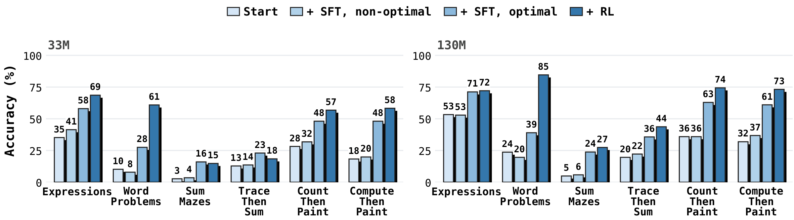
Vision is a credible substrate for unifying language with other modalities.
@article{chu2026pixel,
title = {Pixel is All You Need},
author = {Chu, Jie and Shi, Haoting and Zhang, Fucheng and Liu, Jiawei and Liao, Junwei and Wen, Ying and Wen, Muning},
journal = {arXiv preprint arXiv:2611.22820},
year = {2026},
eprint = {2611.22820},
archivePrefix = {arXiv},
primaryClass = {cs.CV},
url = {https://arxiv.org/abs/2611.22820}
}